Every kill and death in your
VALORANT and Apex Legends matches, marked for youVALORANT 與 Apex Legends
每一次擊殺與死亡，自動幫你標好
Record your matches or drag in videos you already have. Aditor finds the key moments from on-screen pixels, then lets you pick highlights on a timeline and export them.錄下對局，或直接拖入手上的影片。Aditor 只從畫面像素找出關鍵時刻，讓你在時間軸上挑選精彩片段並匯出。
Download for Windows下載 Windows 版 GitHub Windows 10 / 11, 64-bit · installer or portable buildWindows 10 / 11 64 位元 · 安裝版或免安裝版Feature tour功能導覽
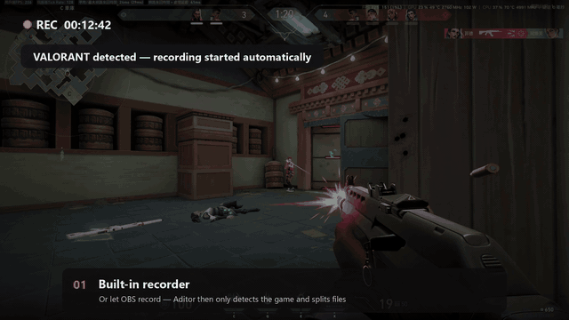
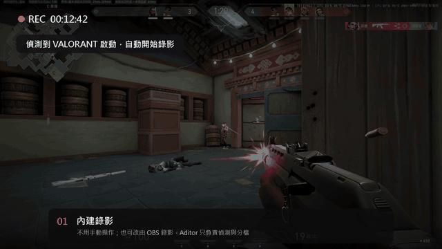
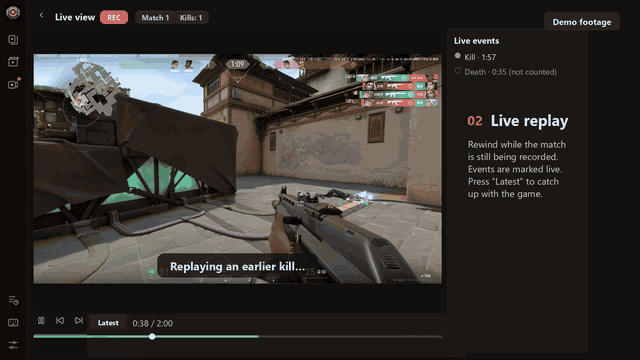
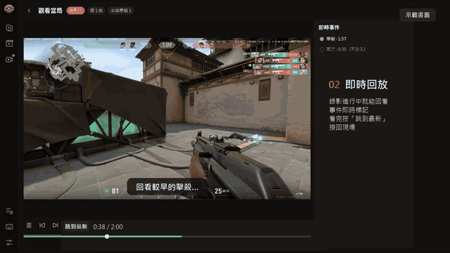
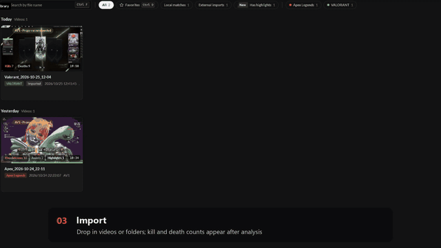
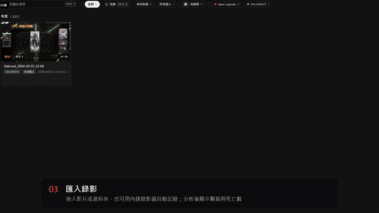
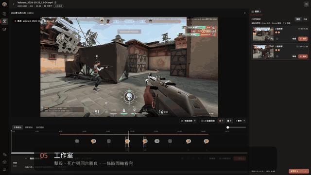
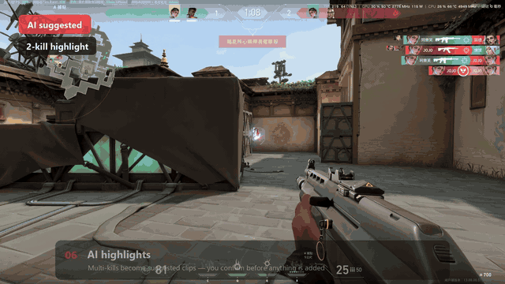
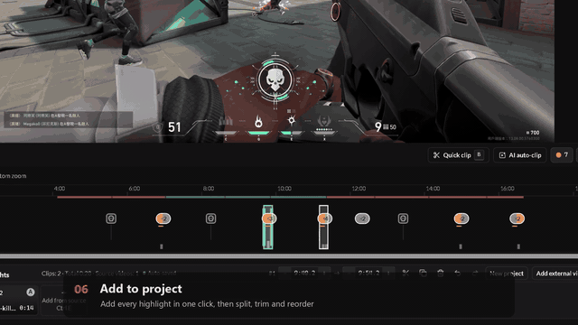
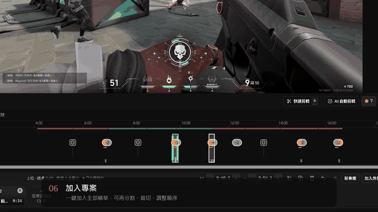
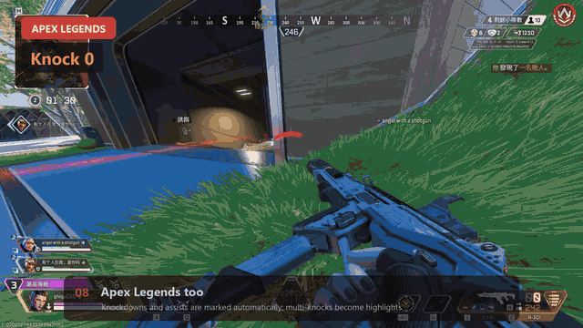
How Aditor worksAditor 如何運作
- Analyzes only the on-screen pixels of recordings you make yourself.只分析你自己錄製的影片畫面像素。
- By default it does not inject into the game, read game memory or modify game files.預設不注入遊戲、不讀取遊戲記憶體、不修改遊戲檔案。
- It provides no live match information and no competitive advantage.不提供任何即時戰局資訊或競爭優勢。
- Videos are processed locally on your PC. Filtered Sentry error and performance diagnostics are on by default and can be turned off in Settings (details).影片在你的電腦上本機處理。過濾後的 Sentry 錯誤與效能診斷預設啟用，可在設定關閉（詳情）。
What you can do主要功能
Import and watch folders匯入與監看資料夾
MP4, MKV, MOV and WebM. New videos in a watch folder are queued for analysis automatically.支援 MP4、MKV、MOV、WebM；監看資料夾中的新影片會自動排隊分析。
VALORANTVALORANT
Kills, deaths, rounds, multi-kills and aces, with a round win/loss strip on the timeline.擊殺、死亡、回合、連殺與 ACE，時間軸上有回合勝負色帶。
Apex LegendsApex Legends
Knockdowns and assists, with teammates' kills while you spectate not counted as yours.擊倒與助攻；死亡後旁觀隊友的擊殺不會算成你的。
Capture options擷取選項
Window or screen capture, optional cursor, system audio and microphone, and OBS mode.視窗或螢幕擷取，可選滑鼠游標、系統音訊與麥克風，也支援 OBS 模式。
Edit剪輯
Split, trim, reorder, undo and autosave; one project can use clips from several videos.分割、裁切、排序、復原與自動儲存；一個專案可使用多支影片的片段。
Languages介面語言
繁體中文, 简体中文, English, 日本語 and 한국어.繁體中文、简体中文、English、日本語、한국어。